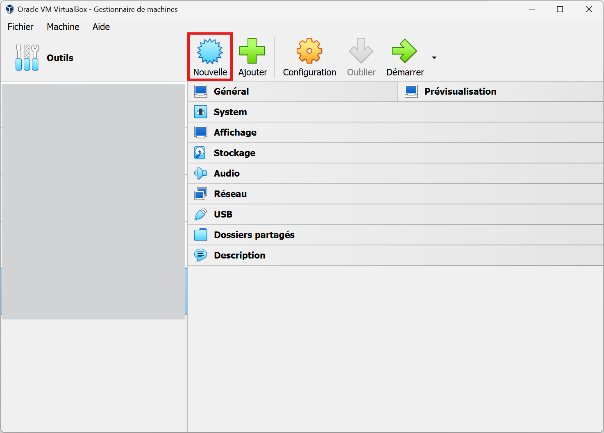
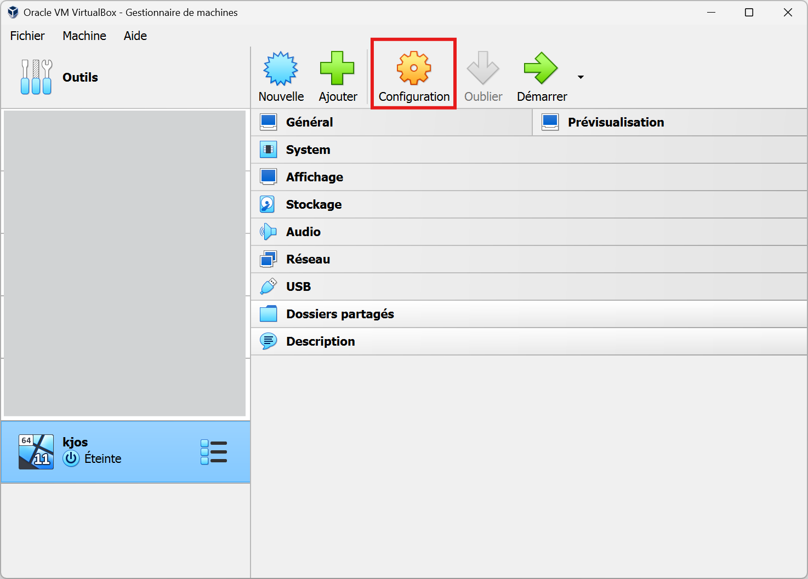
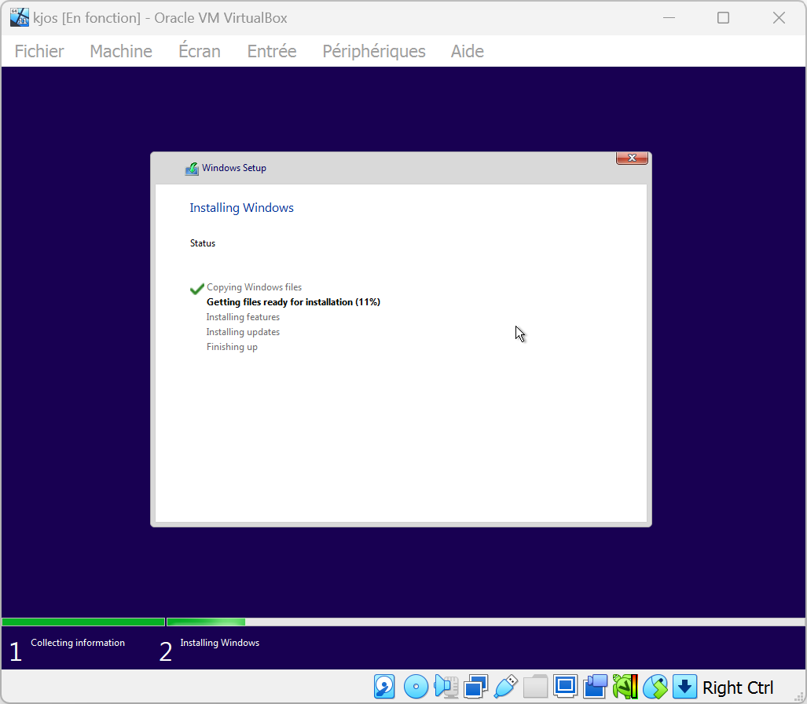

Une fois KJOS téléchargé, installer Virtual Box ou tout autre logiciel d'émulation de machines virtuelles.
Créer une nouvelle machine virtuelle.
Configurer la machine virtuelle comme ci-dessous.
⚠️ Mettre la version de Windows en fonction de l'OS choisit:
KJOS ▶️ Windows 11
KJOS-Lite ▶️ Windows 10
⚠️ ATTENTION ⚠️
Pour la configuration, mettre au moins la configuration minimale de la version de KJOS choisie.
Le mode EFI doit être désactivé pour KJOS-Lite !
Pour la suite, laisser les paramètres par défaut et terminer.
Cliquer ensuite sur configuration.
Charger l'ISO dans les disques de la machine virtuelle dans:
Stockage -> Vide -> Lecteur Optique -> Choose a disk file -> OK
Démarrer la VM et cliquer sur la fenêtre qui vient de s'ouvrir.
⚠️ Au moment où la machine démarre, il faudra cliquer de nombreuses fois sur la touche 'Entrée' pour démarrer l'installation, l'icône de windows (ou virtual box) s'affichera.
L'assistant d'installation démarrera et affichera le menu ci-dessous.
Cliquer sur suivant et laisser tous les paramètres par défaut. Windows commencera à s'installer, celà peut prendre quelques minutes.
La VM va redémarrer de nombreuses fois et peu rester figée pendant quelques secondes, pas d'inquiétude, tout est normal.
Une fois l'installation finie, une page de création de compte local s'affichera.